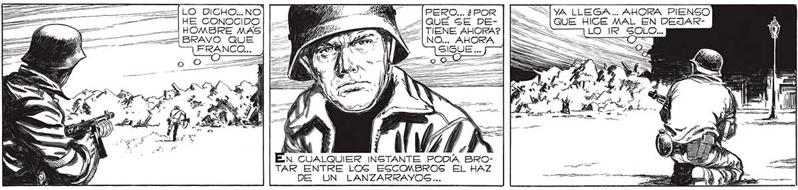
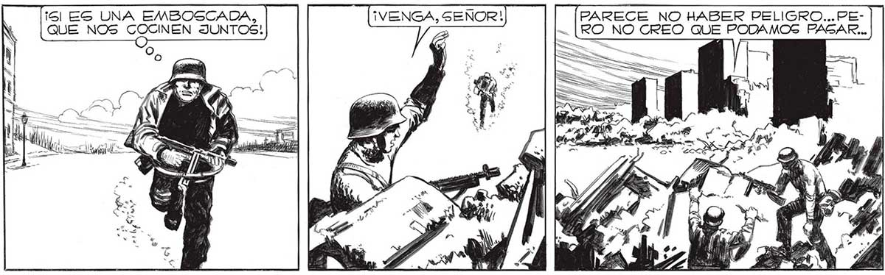
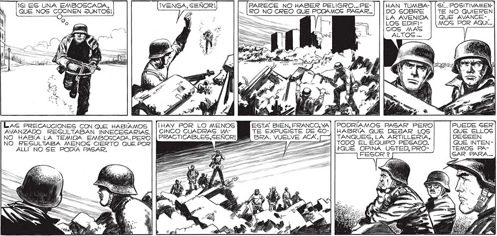

188 H====== pan ha 8 PERO... ¿ POR == - HE CONOCIDO | |... e Ú. _AQUEÉ SE DE— HOMBRE MAS | | WII, ==] TIENE AHORA? == BRAVO QUE NWE E NE NO... AHORA FRANCO... y | YT > Y == N CUALQUIER INSTANTE PODIA BROTAR ENTRE LOG ESCOMBROS EL HAZ DE UN LANZARRAYOG... PARECE NO HABER PELIGRO... PE- HAN TUMBA-| (Sí... POSITIVAMEN-. (RO NO CREO QUE PODAMOS PAGAR... DO SOBRE TE NO QUIEREN == A q LA AVENIDA | | QUE AVANCE-, LOS EDIFI- MOS POR AQUÍ... COS MAS ALTOS ... . pr "la =D LAs PRECAUCIONES CON QUE HABIAMOS | [¡HAY POR LO MENOS ESTA BIEN, FRANCO, YA| [PODRÍAMOS PASAR PERO PUEDE SER AVANZADO RESULTABAN INNECESARIAS. | | CINCO CUADRAS IM- TE EXPUGISTE DE 50-| [HABRIA QUE DEJAR LOS QUE ELLOS NO HABÍA LA TEMIDA EMBOSCADA. PERO] | PRACTICABLES.SEÑOR! MS . ej Y [TANQUES, LA ARTILLERIA, DESEEN NO RESULTABA MENOS CIERTO QUE POR > _z LA | TODO EL EQUIPO PEGADO. QUE INTENA z aa >>> FESOR ? GAR PARA...


